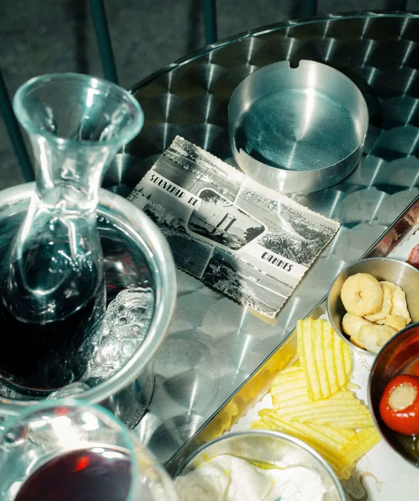
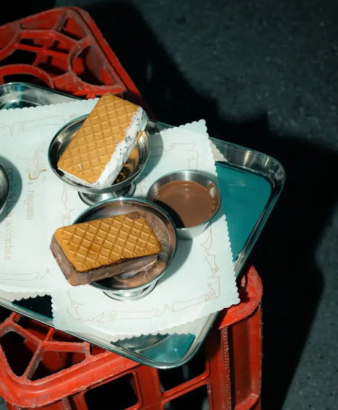
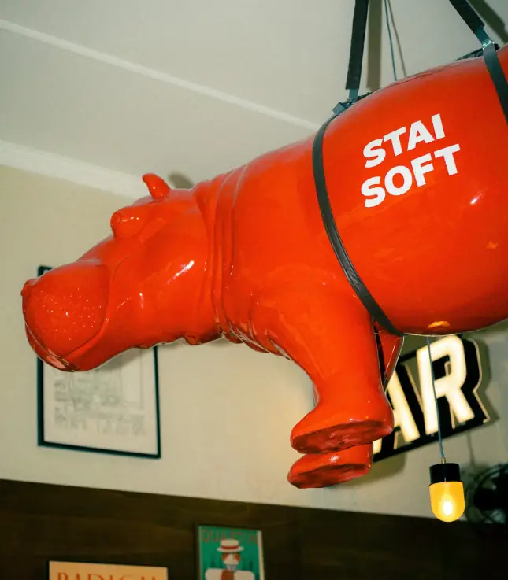
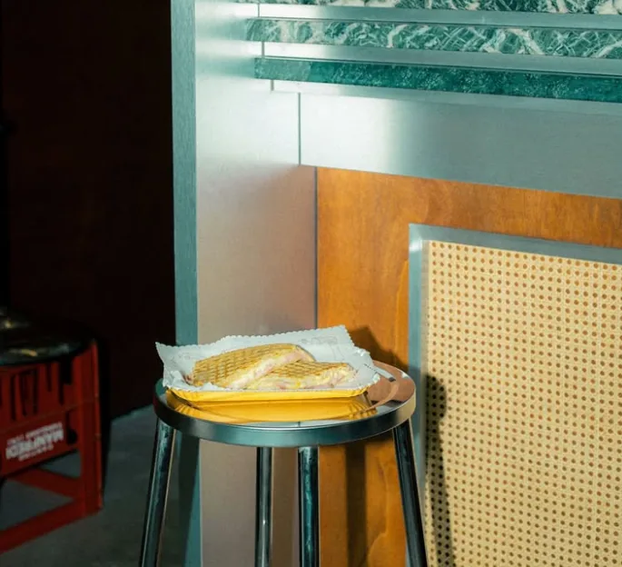
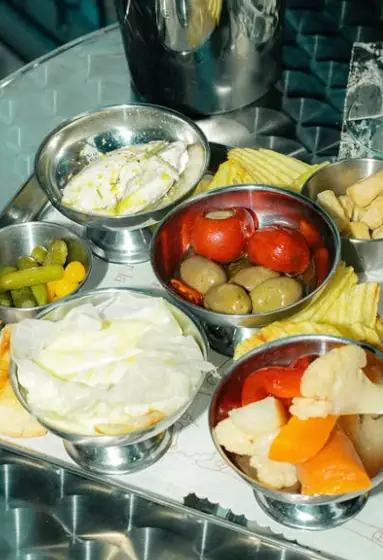

Quartin – Chiacchiere da bar Aperitivi, vini al calice e in quartino, cocktail, gelato.
Via Santa Giulia 21/D Vanchiglia, Torino
Il Quartin
Un bar di quartiere a Vanchiglia, dedicato all’incontro e alla convivialità.
Aperto dal 10 settembre 2026 [DA CONFERMARE] una sola fonte giornalistica
- Aperitivi
- Vini al calice e in quartino
- Cocktail
- Gelato
Lo zio Tony diceva, il gelato in coppetta d’acciaio non fa ingrassare perché il metallo trattiene le calorie.
Lo zio Tony diceva, la birretta da 20 cl è la scusa perfetta per ordinarne ancora una.
Da bere e da assaggiare
[DA CONFERMARE] Menu trascritto da una foto del menu cartaceo: voci e prezzi (in euro) vanno verificati con il locale. Le righe lette con dubbio hanno un riquadro in più.


Il locale
Acciaio, marmo verde, legno e un ippopotamo appeso al soffitto.



[DA CONFERMARE] Mancano foto di: facciata con il civico, sala intera, bancone, un cocktail, il gelato soft.
Vieni a trovarci
Via Santa Giulia 21/D Vanchiglia, Torino Come arrivare (apre Google Maps in una nuova scheda)- Orari
- [DA CONFERMARE] orari di apertura e giorno di chiusura
- Telefono
- [DA CONFERMARE] numero
- Instagram e altri contatti
- [DA CONFERMARE] profilo social ed email
Lo zio Tony diceva, quando trovi parcheggio davanti a dove devi andare non farti domande.